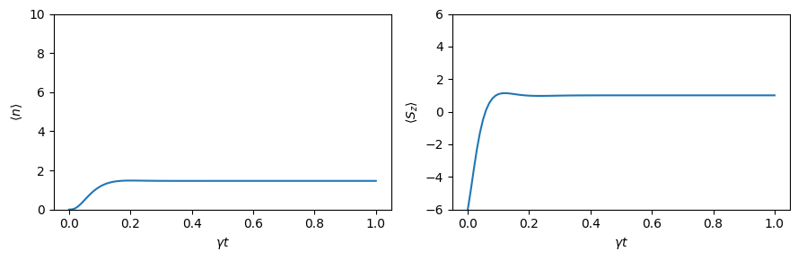
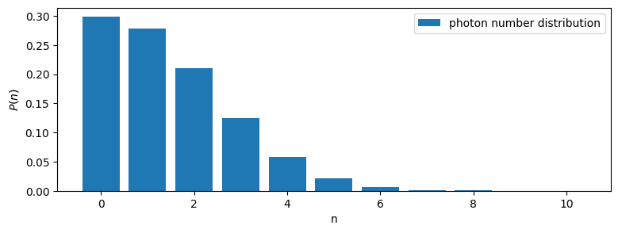
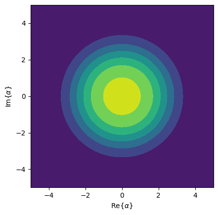

This notebook can be found on github
Superradiant laser
In this example we will show an approximate treatment of a superradiant laser. In general, a laser consists of an optical cavity containing an atomic gain medium. The Hamiltonian of this system is
$H = \Delta a^\dagger a + g\sum_j\left(a^\dagger \sigma_j^- + a\sigma_j^+\right),$
where $\Delta = \omega_\mathrm{c} - \omega_\mathrm{a}$ is the detuning between the cavity resonance frequency $\omega_\mathrm{c}$ and the atomic transition frequency $\omega_\mathrm{a}$. Note, that we assumed that all atoms couple equally to the cavity mode. This allows us to move to a collective basis by defining
$S^\pm = \sum_j\sigma_j^\pm,$
such that the Hamiltonian becomes
$H = \Delta a^\dagger a + g\left(a^\dagger S^- + aS^+\right).$
This also means that the Hamiltonian conserves symmetry. Thus, if we start in a state that is symmetric under particle exchange (e.g. no photons and all atoms in the ground state), the Hamiltonian will never cause the state to leave the symmetric subspace. This allows us to project the operators $S^\pm$ onto the symmetric subspace. Overall, the $N$ two-level atoms then behave like one $N/2$-spin particle, effectively reducing the size of our Hilbert space from $2^N$ to $N+1$.
Furthermore, we assume that the spontaneous emission of the atoms is also collective,
$\mathcal{L}_\gamma[\rho] = \frac{1}{2}\sum_{i,j}\gamma_{ij}\left(2\sigma_i^-\rho\sigma_j^+ - \sigma_i^+\sigma_j^-\rho - \rho\sigma_i^+\sigma_j^-\right).$
If the spontaneous emission is superradiant, i.e. $\gamma_{ij}=\gamma$ it also conserves symmetry. The corresponding Lindblad term can be written as
$\mathcal{L}_\gamma[\rho] = \frac{\gamma}{2}\left(2S^-\rho S^+ - S^+S^-\rho - \rho S^+S^-\right).$
The cavity decay is included by the familiar term
$\mathcal{L}_\kappa[\rho] = \frac{\kappa}{2}\left(2a\rho a^\dagger - a^\dagger a \rho - \rho a^\dagger a\right).$
The last ingredient we need in order for a lasing process to occur is population inversion. This requires an irreversible process from the atomic ground to the excited state. Assuming that this process is of collective nature as well, we may model it by an effective pump rate which corresponds to spontaneous emission from the ground to the excited state,
$\mathcal{L}_R[\rho] = \frac{R}{2}\left(2S^+\rho S^- - S^-S^+\rho - \rho S^-S^+\right).$
We therefore see that the overall system conserves symmetry. Modelling the atoms as spin-$N/2$ particle is then justified. In order to implement this model in QuantumOptics, we proceed as usual. First we load the libraries.
using QuantumOptics
using PyPlot
using LinearAlgebraThen we define the parameters we want to use in our system. Note, that a superradiant laser operates in the bad-cavity regime where $\gamma,g \ll \kappa$.
# Parameters
N_cutoff=10 #photon cutoff
N_atoms=6 #number of atoms
γ=1.0 #decay rate
Δ=0 #detuning
g=10γ #coupling to the cavity
R=9γ #pump rate
κ=40γ; #rate of loss of photons from the cavityWith these parameters we can build the Hilbert space and basic operators accordingly. Note, that as discussed above we use a basis corresponding to an $N/2$-spin for the atoms.
# Bases
b_fock=FockBasis(N_cutoff)
b_spin=SpinBasis(N_atoms//2)
# Fundamental operators
a = destroy(b_fock)
at = create(b_fock)
n = number(b_fock)
sm = sigmam(b_spin)
sp = sigmap(b_spin)
sz = sigmaz(b_spin)This allows us to build the Hamiltonian in a straightforward way.
# Jaynes-Cummings-Hamiltonian
H0 = Δ*n
Hint = g*(at ⊗ sm + a ⊗ sp)
H = H0 ⊗ sparse(one(b_spin)) + Hint; Now, we define an initial state where there are no photons inside the cavity and all atoms are in the ground state. With a given list of times, and the decay operators we can then compute the time evolution according to a master equation.
# Initial state
Ψ0 = fockstate(b_fock, 0) ⊗ spindown(b_spin)
# Time interval
T_end=1
dt=0.01
T = [0:dt:T_end;]
# Collapse operators and decay rates
J=[sparse(one(b_fock)) ⊗ sm, sparse(one(b_fock)) ⊗ sp, a ⊗ sparse(one(b_spin))]
rates = [γ, R, κ]
# Time evolution according to a master equation
tout, ρt = timeevolution.master(T, Ψ0, H, J; rates=rates)From the density matrix at all points in time ρt we can compute physical properties of our system. For example, we can calculate the expectation values corresponding to the cavity photon number and the atomic inversion, respectively.
# Photon number and inversion
exp_n_master= real(expect(n ⊗ sparse(one(b_spin)), ρt))
exp_sz_master = real(expect(sparse(one(b_fock)) ⊗ sz, ρt));
# Plot results
figure(figsize=(9, 3))
subplot(121)
ylim([0, N_cutoff])
plot(T, exp_n_master);
xlabel(L"\gamma t")
ylabel(L"\langle n \rangle")
subplot(122)
ylim([-N_atoms, N_atoms])
plot(T, exp_sz_master);
xlabel(L"\gamma t")
ylabel(L"\langle S_z \rangle")
tight_layout()
We can see that there is only a moderate number of photons inside the cavity, even though population inversion is achieved. This is a characteristic of a superradiant laser: the coherence is stored in the atomic gain medium rather than the cavity field.
This can be also seen when looking at the photon number distribution of the state at the end of the time evolution. The distribution is given by the diagonal of the reduced density matrix of the field $\rho_f = \mathrm{tr}_a(\rho)$, where we take the partial trace over the atomic Hilbert space.
# Photon number distribution
figure(figsize=(9,3))
ρ_end=ptrace(ρt[end], 2)
N=[0:1:N_cutoff;]
p_n=real(diag(ρ_end.data))
bar(N, p_n, label="photon number distribution")
legend()
xlabel("n")
ylabel(L"P(n)")
We see that, even though higher photon states are populated, the largest amount of population is in the vacuum state. Note, that this distribution also serves as a check of our cut-off: the amount of population in the state with N_cutoff photons is negligible, which tells us that the choice of the cut-off is sufficient. Another thing of interest is the spectrum of the laser: it tells us at which frequencies the cavity emits light. The specturm is computed as the Fourier transform of the steady-state correlation function
$g(\tau) = \langle a^\dagger(\tau) a\rangle.$
This may be computed by defining a density operator $\bar{\rho}=a\rho(t_\mathrm{end})$ and calculation $\bar{\rho}(\tau)$. The correlation function is then given by $g(\tau)=\langle a^\dagger \rangle_{\bar{\rho}(\tau)}$.
# Spectrum
ρ_bar= (a ⊗ sparse(one(b_spin)))*ρt[end]
τ_end=10
τ=collect(range(0.0, stop=τ_end, length=2^12))
τout, ρ_bar_τ=timeevolution.master(τ, ρ_bar, H, J; rates=rates)
g_τ=expect(at ⊗ one(b_spin), ρ_bar_τ)
ω, spec = timecorrelations.correlation2spectrum(τ, g_τ; normalize_spec=true);
plot(ω, spec)
xlabel(L"\omega/\gamma")
ylabel("Intensity")
ylim(-0.1, 1.1)
xlim(-100, 100)
grid()
From the spectrum we see that the cavity emits light around the atomic and cavity resonance. The FWHM of the peak is well below the cavity linewidth $\kappa$. Finally, we can look at the distribution of the field in phase space via the Husimi-Q quasi-probability function. We see that the system remains phase-invariant since it its Q-Function is spherical symmetric.
xvec=[-5:0.1:5;];
yvec=[-5:0.1:5;];
#Husimi Q-function
Q=qfunc(ρ_end, xvec, yvec)
contourf(xvec,yvec,Q)
axis("square")
ylabel(L"\mathrm{Im}\{\alpha\}")
xlabel(L"\mathrm{Re}\{\alpha\}")/root/.local/lib/python3.10/site-packages/matplotlib/contour.py:1568: ComplexWarning: Casting complex values to real discards the imaginary part
self.zmax = z.max().astype(float)
/root/.local/lib/python3.10/site-packages/matplotlib/contour.py:1569: ComplexWarning: Casting complex values to real discards the imaginary part
self.zmin = z.min().astype(float)
/root/.local/lib/python3.10/site-packages/numpy/ma/core.py:2820: ComplexWarning: Casting complex values to real discards the imaginary part
_data = np.array(data, dtype=dtype, copy=copy,